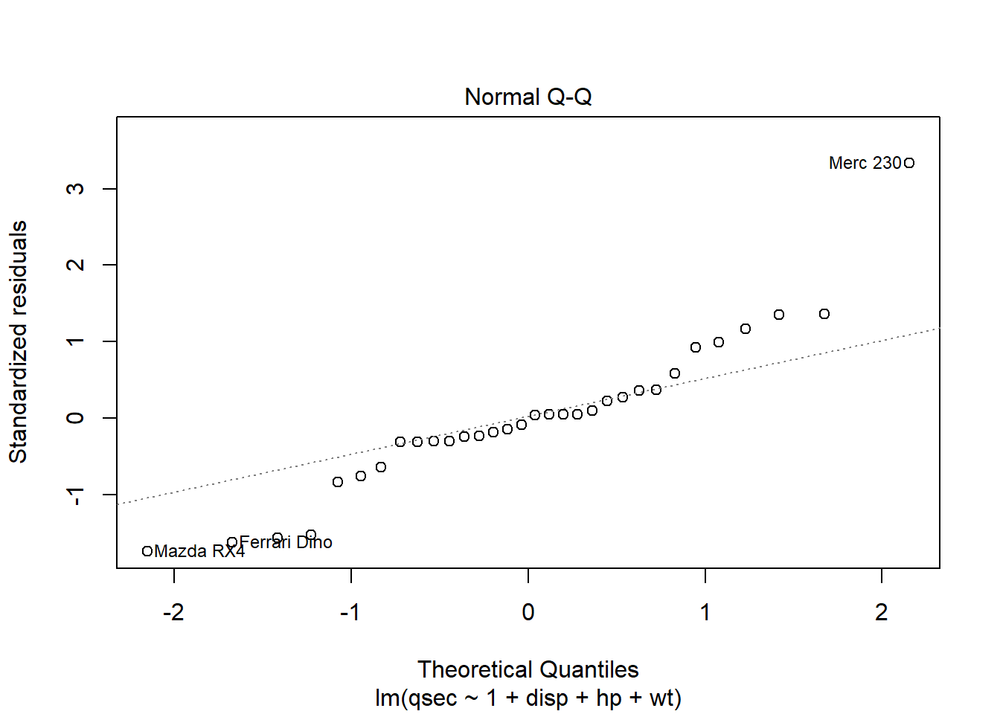

Last week, we discussed simple linear regression, wherein we predict a response\(Y\) based on a single predictor\(X\), according to the model \[
Y = \beta_0 + \beta_1 X.
\]
In lecture, we had an extended discussion of predicting crime rates (on a 22 year lag) based on levels of lead in the atmosphere. That is, our predictor was lead level (measured in metric tons) and our response was aggravated assaults per million people. We predicted a single response from a single predictor– nice and… simple?
But of course in reality, there are lots of things beyond lead levels that might have an effect on crime rates, and which we might like to use to predict crime rates. Examples include availability of social services, amounts of green space in a city, population density, income inequality… I’m sure you can think of plenty others.
How might we build a model that uses multiple predictors, rather than a single one, to predict our response? Well, this is precisely the idea behind multiple linear regression, our focus this week.
28.1 Multiple regression
Everything so far is likely (mostly) familiar to you from STAT240: regressing one variable against another. What happens, however, when we want to incorporate multiple different predictors in our model?
Example: salary and education Recall from last week’s lecture our data set relating salaries to years of education. We noted that there were many other factors that might predict salary in addition to simply years of education, and that their inclusion in our model would improve our predictive accuracy. For example, we might add additional information concerning college major, demographic information, parents’ level of education, etc.
Example: housing prices Suppose that we are looking to invest in real estate. To do that, it would be quite useful if we could predict, based on what we know about a house, how much that house is likely to sell for. One approach would be to predict housing price based on a collection of information such as square footage, age of the house, number of bedrooms, proximity to parks, etc.
28.1.1 Specifying multiple predictors
How do we go about adding more variables to our model?
Well, it’s basically as simple as you would imagine. We just add more predictors (and more coefficients) to our linear function. If we have \(p\) predictors plus an intercept, we predict the response \(y\) according to \[
y = \beta_0 + \beta_1 x_1 + \beta_2 x_2 + \cdots + \beta_{p-1} x_{p-1} + \beta_p x_p,
\]
where \(x_1,x_2,\dots,x_p \in \mathbb{R}\) are predictors.
Similarly, our model now takes the form that for each \(i=1,2,\dots,n\), we observe \[
Y_i = \beta_0 + \beta_1 X_{i,1} + \beta_2 X_{i,2} + \cdots + \beta_{p-1} X_{i,p-1} + \beta_p X_{i,p} + \epsilon_i,
\]
where \(\epsilon_i\) is an error term (again, assumed normally distributed, independent over \(i\), etc) and \(X_i = (X_{i,1},X_{i,2},\dots,X_{i,p})^T \in \mathbb{R}^p\) is a vector of predictors. If you haven’t taken linear algebra or you just don’t like vectors, not to worry– it’s perfectly safe to think of this as just a list of numbers in this class. But linear algebra is awesome and super useful if you want to understand machine learning methods, so I recommend that you take linear algebra if you haven’t already!
Note: some resources will use this notation “backward”, instead writing \((X_{1,i}, X_{2,i}, \dots, X_{p-1,i}, X_{p,i})\) for the predictors. The distinction doesn’t matter much, so long as you’re consistent.
A convenient way to think about our data set, then, is to make an array of numbers (i.e., a matrix), in which each row corresponds to an observation, and each column corresponds to a predictor: \[
\bf{X} =
\begin{bmatrix}
X_{1,1} & X_{1,2} & \cdots & X_{1,p} \\
X_{2,1} & X_{2,2} & \cdots & X_{2,p} \\
\vdots & \vdots & \ddots & \vdots \\
X_{n-1,1} & X_{n-1,2} & \cdots & X_{n-1,p} \\
X_{n,1} & X_{n,2} & \cdots & X_{n,p}
\end{bmatrix}
\]
The nice thing about this is that we can tack on a column of ones corresponding to our intercept term, \[
\bf{X} =
\begin{bmatrix}
1 & X_{1,1} & X_{1,2} & \cdots & X_{1,p} \\
1 & X_{2,1} & X_{2,2} & \cdots & X_{2,p} \\
\vdots & \vdots & \vdots & \ddots & \vdots \\
1 & X_{n-1,1} & X_{n-1,2} & \cdots & X_{n-1,p} \\
1& X_{n,1} & X_{n,2} & \cdots & X_{n,p}
\end{bmatrix}
\]
and then (if you don’t know linear algebra, it’s okay to just skip this! It won’t be on an exam, it’s just a useful connection to another area that some students have seen before!), we can write our regression formula \[
y_i = \beta_0 + \beta_1 x_{i,1} + \beta_2 x_{i,2} + \cdots + \beta_p x_{i,p}~~~\text{ for } i = 1,2,\dots,n
\] as a matrix-vector equation, \[
\bf{y} = \bf{X} \bf{\beta}
\] where \(\bf{y} = (y_1,y_2,\dots, y_n)^T\) is a vector of our responses, and \(\bf{\beta} = (\beta_0,\beta_1, \beta_2, \dots, \beta_p)^T\) is a vector of our coefficients.
Again, if you haven’t taken linear algebra before, you can safely ignore the above. It won’t be on an exam or a homework or anything like that, I’ve just included it for students who are familiar with linear algebra to illustrate a connection to another area of math!
28.1.2 Example: the mtcars dataset
Let’s recall the mtcars data set, which includes a number of variables describing the specifications and performance of a collection of car brands.
Let’s suppose that we are interested in predicting the quarter mile time (qsec, the time it takes the car to go 1/4 mile from a dead stop) based on its engine displacement (disp, measured in cubic inches), horsepower (hp, measured in… horsepower) and weight (wt, measured in 1000s of pounds).
That is, we want to build a multiple linear regression model of the form \[
\text{qsec} = \beta_0 + \beta_1 \text{disp} + \beta_2 \text{hp} + \beta_3 \text{wt} + \epsilon
\]
To fit such a model in R, the syntax is quite similar to the simple linear regression case. The only thing that changes is that we need to specify this model in R’s notation. We do that via qsec ~ 1 + disp + hp + wt.
Let’s fit the model in R and see what happens.
mtc_model <-lm( qsec ~1+ disp + hp + wt, data=mtcars);summary(mtc_model)
Call:
lm(formula = qsec ~ 1 + disp + hp + wt, data = mtcars)
Residuals:
Min 1Q Median 3Q Max
-1.8121 -0.3125 -0.0245 0.3544 3.3693
Coefficients:
Estimate Std. Error t value Pr(>|t|)
(Intercept) 17.965050 0.849663 21.144 < 2e-16 ***
disp -0.006622 0.004166 -1.590 0.12317
hp -0.022953 0.004603 -4.986 2.88e-05 ***
wt 1.485283 0.429172 3.461 0.00175 **
---
Signif. codes: 0 '***' 0.001 '**' 0.01 '*' 0.05 '.' 0.1 ' ' 1
Residual standard error: 1.062 on 28 degrees of freedom
Multiple R-squared: 0.6808, Adjusted R-squared: 0.6466
F-statistic: 19.91 on 3 and 28 DF, p-value: 4.134e-07
Once again, before we get too eager about interpreting the model, we should check that our residuals are reasonable.
hist(mtc_model$residuals)
Hmm… that isn’t amazing, but on the other hand, there aren’t very many observations to begin with, so we shouldn’t expect a particularly normal-looking histogram.
Checking heteroscedasticity isn’t so easy now, but we can still do things like compare the residuals with a normal via a Q-Q plot:
plot(mtc_model, which=2)

In my opinion, this Q-Q plot would likely lead me to question the assumption of normal errors. That doesn’t mean that we can’t proceed with using our linear model, but it will mean that we should be a bit careful with how much credence we give to any quantities that depend on our normality assumption (e.g., our p-values).
Let’s press on regardless, for now, mostly for the sake of demonstration of what we would do, if we were reasonably happy with our model assumptions. Still, we should bear in the back of our minds that perhaps our normality assumptions aren’t exactly true.
Let’s return to our model output.
summary(mtc_model)
Call:
lm(formula = qsec ~ 1 + disp + hp + wt, data = mtcars)
Residuals:
Min 1Q Median 3Q Max
-1.8121 -0.3125 -0.0245 0.3544 3.3693
Coefficients:
Estimate Std. Error t value Pr(>|t|)
(Intercept) 17.965050 0.849663 21.144 < 2e-16 ***
disp -0.006622 0.004166 -1.590 0.12317
hp -0.022953 0.004603 -4.986 2.88e-05 ***
wt 1.485283 0.429172 3.461 0.00175 **
---
Signif. codes: 0 '***' 0.001 '**' 0.01 '*' 0.05 '.' 0.1 ' ' 1
Residual standard error: 1.062 on 28 degrees of freedom
Multiple R-squared: 0.6808, Adjusted R-squared: 0.6466
F-statistic: 19.91 on 3 and 28 DF, p-value: 4.134e-07
Scanning our way up the model summary, let’s look at the table of coefficient estimates. We see that our intercept term and the coefficients for horsepower (hp) and weight (wt) are flagged as being significant. Thus, briefly putting on our testing hats, we would reject the null hypotheses \(H_0 : \beta_0=0\), \(H_0: \beta_{\text{hp}} = 0\) and \(H_0: \beta_{\text{wt}} = 0\). On the other hand, there is insufficient evidence to reject the null \(H_0 : \beta_{\text{wt}} = 0\).
In other words, it appears that horsepower and weight are associated with changes in quarter-mile time, but displacement is not.
28.1.3 Interpreting estimated coefficients
In the case of simple linear regression, our interpretation of an estimated slope \(\hat{\beta}_1\) was that an increase of one unit in our predictor was associated with an increase of \(\hat{\beta}_1\) in our response.
What do our estimated coefficients mean when we have multiple predictors instead of just one?
Well, the interpretation is almost exactly the same. Let’s consider one of the coefficients in our model.
summary(mtc_model)
Call:
lm(formula = qsec ~ 1 + disp + hp + wt, data = mtcars)
Residuals:
Min 1Q Median 3Q Max
-1.8121 -0.3125 -0.0245 0.3544 3.3693
Coefficients:
Estimate Std. Error t value Pr(>|t|)
(Intercept) 17.965050 0.849663 21.144 < 2e-16 ***
disp -0.006622 0.004166 -1.590 0.12317
hp -0.022953 0.004603 -4.986 2.88e-05 ***
wt 1.485283 0.429172 3.461 0.00175 **
---
Signif. codes: 0 '***' 0.001 '**' 0.01 '*' 0.05 '.' 0.1 ' ' 1
Residual standard error: 1.062 on 28 degrees of freedom
Multiple R-squared: 0.6808, Adjusted R-squared: 0.6466
F-statistic: 19.91 on 3 and 28 DF, p-value: 4.134e-07
Our estimate for the wt coefficient is about \(1.5\) (we’re rounding here just to avoid writing a bunch of numbers again and again).
If this were simple linear regression, we would say that a unit increase in weight is associated with an increase of \(1.5\) seconds in qsec time. But this isn’t simple linear regression– we have other predictors in our model. In particular, we have coefficients corresponding to engine size (disp) and horsepower (hp). That is, our estimated coefficient of wt is the increase in qsec associated with a unit increase of wtwhile holding hp and disp fixed.
Typically, say something like “controlling for hp and disp, a unit increase of wt is associated with an increase of \(1.5\) in qsec”.
28.2 Assessing model fit
Once we’ve fit a model to the data, how do we tell if our model is good or not? It’s a trickier question that it might seem at first, and we’ll have lots more to say about the problem in coming weeks. For now, though, let’s consider the most obvious answer to this question.
We fit our model to the data by minimizing the sum of squares (we’re sticking with simple linear regression here for simplicity– this idea extends to multiple linear regression in the obvious way), \[
\ell( \beta_0, \beta_1 )
= \sum_{i=1}^n (y_i - \hat{y}_i)^2
= \sum_{i=1}^n \left( y_i - (\beta_0 + \beta_1 x_i) \right)^2.
\]
So what better way to measure how good our model is than using precisely this quantity, as achieved by our fitted model?
28.2.1 Assessing model fit with RSS
We define the residual sum of squares (RSS; also called the sum of squared errors, SSE) to be the sum of squared residuals between our model and the true responses. That is, letting \(\hat{\beta}_0\) and \(\hat{\beta}_1\) be our estimates of the coefficients, \[
\operatorname{RSS}
=
\operatorname{SSE}
=
\sum_{i=1}^n (y_i - \hat{y}_i)^2
=
\sum_{i=1}^n \left(y_i - (\hat{\beta}_0 + \hat{\beta}_1 x_i) \right)^2.
\]
Okay, but suppose that we fit our model and we get a particular RSS, say, 55. How do we tell whether a particular RSS is large or small? Well, before we even get to that, there are two problems, here.
We really ought to renormalize that sum– otherwise, models fit with more observations will tend to trivially have larger RSS. Further, if we have more parameters (i.e., more coefficients, i.e., more predictors) in our model, we are going to be able to trivially reduce the RSS. This is a subtle point, and we’ll discuss it in detail when we talk about model selection and cross validation in a few weeks. The important point for now is that instead of looking at the RSS, we adjust the RSS by dividing it by the degrees of freedom of our model: \(n-(p+1)\): \[
\frac{ \operatorname{RSS} }{ \operatorname{df} }
=
\frac{1}{n-(p+1)} \sum_{i=1}^n \left( \hat{y}_i - y_i \right)^2
\] Remember, generally speaking, our degrees of freedom are the number of data points, less the number of parameters: \(n-(p+1)\), if \(p\) is the number of predictors (and an additional \(1\) for the intercept term). So a model with more parameters will have a smaller denominator in that expression, and will have a larger RSS. That is, the denominator is smaller when we have more parameters available to our model.
RSS is a sum of squares. So, like a variance, it is, in a certain sense, of the wrong units to be measuring the “size” of our error. So let’s take the square root of our (renormalized) RSS: \[
\sqrt{ \frac{ \operatorname{RSS} }{ \operatorname{df} } }
=
\sqrt{ \frac{ \sum_{i=1}^n (y_i - \hat{y}_i)^2 }{ n-(p+1) } }
\] This quantity is the residual standard error (RSE), and it is reported in the chunk of information at the bottom of our model summary:
summary(mtc_model)
Call:
lm(formula = qsec ~ 1 + disp + hp + wt, data = mtcars)
Residuals:
Min 1Q Median 3Q Max
-1.8121 -0.3125 -0.0245 0.3544 3.3693
Coefficients:
Estimate Std. Error t value Pr(>|t|)
(Intercept) 17.965050 0.849663 21.144 < 2e-16 ***
disp -0.006622 0.004166 -1.590 0.12317
hp -0.022953 0.004603 -4.986 2.88e-05 ***
wt 1.485283 0.429172 3.461 0.00175 **
---
Signif. codes: 0 '***' 0.001 '**' 0.01 '*' 0.05 '.' 0.1 ' ' 1
Residual standard error: 1.062 on 28 degrees of freedom
Multiple R-squared: 0.6808, Adjusted R-squared: 0.6466
F-statistic: 19.91 on 3 and 28 DF, p-value: 4.134e-07
The residual standard error is listed as being 1.062, and as being the residual standard error on 28 degrees of freedom. Remember that most typically, the degrees of freedom of a model (any model, not just linear regression) will be the number of data points less the number of parameters we estimate. In this case, there are 32 data points
nrow(mtcars)
[1] 32
and our model has four parameters: the intercept and our three predictors’ coefficients, so 28 degrees of freedom checks out!
28.2.2 What constitutes a good fit?
Ideally, we want the RSE to be small– after all, it measures the error in our model. But how small is small? What number should we compare it to? Well, in a certain sense, the sum of squared residuals is a measure of how much variance is in the responses that is not explained by our model: \[
\sum_{i=1}^n \left( y_i - \hat{y}_i \right)^2
\]
We need a number to compare this against. But what would this be? Well, ideally, we would like to compare this error against that of another model, and why not (almost) the dumbest model of all: the model with no predictors, just an intercept.
Recall from last week’s lecture that we determined that if we couldn’t use any predictors, and were only allowed an intercept term, then we should choose \[
\hat{\beta}_0 = \bar{y}.
\]
In other words, the “dumbest” model (okay, I’m sure we could come up with even sillier models if we put our minds to it, but bear with me!) is one that just predicts the sample mean of the responses regardless of the value of the predictor(s).
If we used this model, we would obtain a sum of squared residuals given by \[
\sum_{i=1}^n \left(y_i - \bar{y} \right)^2.
\]
This quantity is called the total sum of squares (TSS), and you’ve seen it before, though it was kind of hiding…
where, as a reminder, \[
\operatorname{TSS}=\sum_{i=1}^{n}\left(y_{i}-\bar{y}\right)^{2}
\]
is the total sum of squares and \[
\operatorname{RSS}=\sum_{i=1}^{n}\left(y_{i}-\hat{y}_i \right)^{2}
\] is the residual sum of squares.
If we think of 1. RSS as being the amount of variation in the data not captured by our model, and 2. TSS as being the amount of variation in the data (once we get rid of the structure explained by the “dumbest” model),
then \(1 - \operatorname{RSS}/\operatorname{TSS}\) is the proportion of the variation that is explained by our model.
In the case of simple linear regression, things simplify so that \(R^{2}=r^{2}\), where \(r\) is the correlation coefficient between the predictors and responses: \[
r
=\frac{\sum_{i=1}^{n}\left(x_{i}-\bar{x}\right)\left(y_{i}-\bar{y}\right)}
{\sqrt{\sum_{i=1}^{n}\left(x_{i}-\bar{x}\right)^{2}} \sqrt{\sum_{i=1}^{n}\left(y_{i}-\bar{y}\right)^{2}}}
\]
When \(R^2\) is close to 1, we can be confident that our linear model is accurately capturing the structure (i.e., variation) in the data.
28.2.4 Assessing fit another way: MSS
Let’s consider a different kind of sum of squares: the sum of squares between our model and the “dumbest” model: \[
\sum_{i=1}^n \left( \hat{y}_i - \bar{y} \right)^2.
\]
This quantity is often called the model sum of squares (MSS) or the explained sum of squares (ESS). These names will make more sense when you revisit these quantities in a mathematical statistics course– the short version is that this measures the amount of variation in the data explained by our model– it’s like a variance of our model’s predictions.
As an aside, we can show (if you’re bored, give it a try) that \[
\operatorname{TSS} = \operatorname{RSS} + \operatorname{MSS},
\] so that \[
R^2=\frac{\text{TSS}-\text{RSS}}{\text{TSS}}=\frac{\text{MSS}}{\text{TSS}},
\] Again, that means we can interpret \(R^2\) as measuring the proportion (between 0 and 1) of the variation in the responses (TSS) that is explained by our model.
If our model is a good fit to the data, the MSS should be large, while the RSS should be small. So a sensible number to look at is the ratio of these two different sums of squared errors, each adjusted for their degrees of freedom: \[
\frac{ \operatorname{MSS}/p }{ \operatorname{RSS}/(n-p-1) }.
\]
In fact, in the setting where our noise terms \(\epsilon_i\) are independent normals with shared mean \(0\) and shared variance \(\sigma^2\), this ratio follows a specific distribution: the F-distribution
28.2.5 Assessing model fit with the F-distribution
If we look at the very bottom of our model summary, we’ll see a mention of an F-statistic:
summary(mtc_model)
Call:
lm(formula = qsec ~ 1 + disp + hp + wt, data = mtcars)
Residuals:
Min 1Q Median 3Q Max
-1.8121 -0.3125 -0.0245 0.3544 3.3693
Coefficients:
Estimate Std. Error t value Pr(>|t|)
(Intercept) 17.965050 0.849663 21.144 < 2e-16 ***
disp -0.006622 0.004166 -1.590 0.12317
hp -0.022953 0.004603 -4.986 2.88e-05 ***
wt 1.485283 0.429172 3.461 0.00175 **
---
Signif. codes: 0 '***' 0.001 '**' 0.01 '*' 0.05 '.' 0.1 ' ' 1
Residual standard error: 1.062 on 28 degrees of freedom
Multiple R-squared: 0.6808, Adjusted R-squared: 0.6466
F-statistic: 19.91 on 3 and 28 DF, p-value: 4.134e-07
The F-distribution is another one of those classic random variables that arise when we look at estimating variance. Just as the T-distribution arises when we look at a ratio of a normal to an estimated variance, something like \[
\frac{ \bar{X} - \mu }{ \frac{1}{n}\sum_i( X_i - \bar{X})^2 },
\] the F-distribution arises when we look at a ratio of variance estimates, like \[
\frac{ \frac{1}{n} \sum_i (U_i - \bar{U})^2}{ \frac{1}{m}\sum_j(V_j - \bar{V})^2 }.
\]
Its behavior is governed by two degree-of-freedom parameters, one describing the numerator and one describing the denominator. You’ll learn a lot more about the F-distribution when you learn about analysis of variance (ANOVA) in later classes. In our case, we are looking at the ratio \[
\frac{ \operatorname{MSS}/p }
{ \operatorname{RSS}/(n-p-1) }
= \frac{ \frac{1}{p} \sum_{i=1}^n \left( \hat{y}_i - \bar{y}\right)^2 }
{ \frac{1}{n-p-1} \sum_{i=1}^n \left( y_i - \hat{y}_i \right)^2 },
\] which is a ratio of “means” of squared errors (i.e., variance-like things!). After a bit of algebra (which will have to wait for a mathematical statistics class, I’m afraid), we can show that this ratio is equivalent to a ratio of sample variances.
The important part is that under the null hypothesis in which all of the coefficients predictors are zero, \[
H_0 : \beta_0 = \beta_1 = \cdots = \beta_p = 0,
\]
our ratio of squared error terms will follow an F-distribution with parameters given by \((n-p-1)\) and \(p\). Knowing this distribution, we can test the null hypothesis above, and associate a p-value with the null hypothesis that our model has no explanatory power.
Looking at our model summary again,
summary(mtc_model)
Call:
lm(formula = qsec ~ 1 + disp + hp + wt, data = mtcars)
Residuals:
Min 1Q Median 3Q Max
-1.8121 -0.3125 -0.0245 0.3544 3.3693
Coefficients:
Estimate Std. Error t value Pr(>|t|)
(Intercept) 17.965050 0.849663 21.144 < 2e-16 ***
disp -0.006622 0.004166 -1.590 0.12317
hp -0.022953 0.004603 -4.986 2.88e-05 ***
wt 1.485283 0.429172 3.461 0.00175 **
---
Signif. codes: 0 '***' 0.001 '**' 0.01 '*' 0.05 '.' 0.1 ' ' 1
Residual standard error: 1.062 on 28 degrees of freedom
Multiple R-squared: 0.6808, Adjusted R-squared: 0.6466
F-statistic: 19.91 on 3 and 28 DF, p-value: 4.134e-07
the F-statistic associated with our residuals has a very small p-value associated to it, indicating, in essence, that our model fit is much better than would be expected by chance. Said another way, we can be fairly confident that our model has captured a trend present in our data.
28.3 Looking ahead: model selection
One important point that we’ve ignored in our discussion above is how we go about choosing what predictors to include in our model. For example, the mtcars data set has columns
In our example above, we just chose a few of these to use as predictors. But suppose that we didn’t know ahead of time which predictors to use. How do we choose which ones to include in our model? Are there downsides to just including all of them? We’ll discuss this in great detail in a couple of weeks when we discuss model selection and cross validation, a general set of tools for deciding what predictors to keep in a model and which to discard.
28.4 Mo’ predictors mo’ problems
We’ve seen that extending simple linear regression to multiple linear regression opens up a realm of possibilities for us to incorporate additional information into our models, but this comes at the cost of a few possible pitfalls, which we’ll briefly outline below.
Before we turn to that, let’s take a quick detour to discuss an important trick that lets us include categorical random variables in our regressions.
28.4.1 Handling categorical predictors
Suppose that our long-standing client Catamaran wants to predict spending habits of its customers. For each customer in their database, they know whether or not that customer owns one or more cats, and whether or not they own one or more dogs. This indication of whether or not a customer owns cats (or dogs) is categorical, and it isn’t obvious at first how to incorporate this information into a linear regression model.
The trick is to do something very simple: let’s include two predictors: \[
x_{i,1} = \begin{cases} 1 & \mbox{ if customer } i \text{ owns one or more cats} \\
0 & \mbox { otherwise. }
\end{cases}
\] and \[
x_{i,2} = \begin{cases} 1 & \mbox{ if customer } i \text{ owns one or more dogs} \\
0 & \mbox { otherwise. }
\end{cases}
\]
Then, our model might be something like \[
y_i =\beta_0 + \beta_1 x_{i,1} + \beta_2 x_{i,2}.
\] Our predicted spending by a customer who owns cats but no dogs would be \[
\beta_0 + \beta_1,
\] while our prediction for a customer who owns dogs but not cats would be \[
\beta_0 + \beta_2,
\] and our prediction for a customer who owns both cats and dogs would be \[
\beta_0 + \beta_1 + \beta_2.
\]
These binary variables encoding our categorical variables are often called dummy variables in the literature, especially in the social sciences.
The especially nice thing here is that our interpretation of the coefficients as “the change in response to a unit increase” can be retained: \(\beta_1\) is the (expected) change in spending associated with a “unit increase” in the “customer owns cats” variable. A unit increase in this variable (i.e., from 0 to 1) is just going from “no cats” to “owns one or more cats”.
Example: mtcars revisited. Returning to the mtcars dataset, notice that there are a couple of binary predictors: vs (the engine shape, i.e., cylinder configuration; 0 for “V”-shaped, 1 for “straight”) and am (transmission type; 0 for automatic, 1 for manual). Let’s plot the mtcars data, and see how qsec varies with these two categories:
Let’s see what happens when we fit a model using these two binary predictors.
mtc_bin <-lm( qsec ~1+ am + vs, data=mtcars );summary(mtc_bin)
Call:
lm(formula = qsec ~ 1 + am + vs, data = mtcars)
Residuals:
Min 1Q Median 3Q Max
-1.77902 -0.37789 0.01687 0.65157 2.91187
Coefficients:
Estimate Std. Error t value Pr(>|t|)
(Intercept) 17.1303 0.2754 62.195 < 2e-16 ***
am -1.3091 0.3791 -3.453 0.00172 **
vs 2.8579 0.3753 7.614 2.15e-08 ***
---
Signif. codes: 0 '***' 0.001 '**' 0.01 '*' 0.05 '.' 0.1 ' ' 1
Residual standard error: 1.038 on 29 degrees of freedom
Multiple R-squared: 0.6842, Adjusted R-squared: 0.6624
F-statistic: 31.41 on 2 and 29 DF, p-value: 5.519e-08
Looks like both engine shape and transmission type are useful predictors!
What if we have a category with more than two levels, like demographic information? For example, what if we have survey data in which respondents list what state they live in, and we would like to include that information in our regression?
Well, for each possible category, we can create a binary predictor. So, for example, for each state we could create a predictor that is 1 if the person lives in that state, and zero otherwise. Of course, this is going to result in creating an awful lot of predictors, but that’s a matter that we’ll handle in a few weeks when we discuss model selection and cross validation.
28.5 Interactions
Let’s look at that mtcars plot again with our two binary predictors.
It looks to me like among cars with vs=0, the cars with am=0 have better qsec than those with am=1, but that the transmission type doesn’t make very much difference for qsec among the cars with vs=1 (i.e., straight cylinder configuration).
This is an example of an interaction: the effect of one predictor seems to depend on another predictor.
The similarity to the term “drug interaction” is perhaps the best analogy here. Certain medications will have much stronger or much different effects if they are taken in combination with other medications. For example, people taking Warfarin, a blood thinner invented here at UW-Madison, need to be very careful when taking NSAIDs such as ibuprofen, because the two drugs interact to cause gastrointestinal bleeding. Either of these two medications in isolation does not drastically increase this risk, but they interact to yield a much higher risk.
So it looks like our two binary predictors have an interaction. How might we include this interaction in our model? Well, the natural way is to create another predictor, given by the product of these two predictors: \[
y_i =\beta_0 + \beta_1 x_{i,1} + \beta_2 x_{i,2} + \beta_{1,2} x_{i,1} x_{i,2}.
\]
Example: raining cats and dogs Returning to our Catamaran example, consider the fact that people who own both cats and dogs are also more likely to own a lot of other animals (rats, hamsters, horses, goats… whatever), and this might manifest as an interaction between cat ownership and dog ownership wherein people who own cats and dogs spend far more than would be predicted by just summing the effect of cat ownership and the effect of dog ownership.
We can include interactions in our linear models in R by writing the interaction into our model formula. We just write a colon (:) between the two predictors whose interaction we want to include:
mtc_interact <-lm( qsec ~1+ vs + am + vs:am, data=mtcars );summary(mtc_interact);
Call:
lm(formula = qsec ~ 1 + vs + am + vs:am, data = mtcars)
Residuals:
Min 1Q Median 3Q Max
-1.80000 -0.35429 0.03786 0.66688 2.93286
Coefficients:
Estimate Std. Error t value Pr(>|t|)
(Intercept) 17.14250 0.30497 56.210 < 2e-16 ***
vs 2.82464 0.50245 5.622 5.09e-06 ***
am -1.34583 0.52823 -2.548 0.0166 *
vs:am 0.07869 0.77325 0.102 0.9197
---
Signif. codes: 0 '***' 0.001 '**' 0.01 '*' 0.05 '.' 0.1 ' ' 1
Residual standard error: 1.056 on 28 degrees of freedom
Multiple R-squared: 0.6843, Adjusted R-squared: 0.6505
F-statistic: 20.23 on 3 and 28 DF, p-value: 3.556e-07
Looks like in this case, what looked like an interaction to my eye turned out not to be. We could try only including the interaction term, i.e., fit a model of the form \[
y_i =\beta_0 + \beta_{1,2} x_{i,1} x_{i,2},
\]
but it turns out there’s still no significant effect:
Call:
lm(formula = qsec ~ 1 + am:vs, data = mtcars)
Residuals:
Min 1Q Median 3Q Max
-3.1104 -0.7829 -0.1400 0.7097 5.2896
Coefficients:
Estimate Std. Error t value Pr(>|t|)
(Intercept) 17.6104 0.3512 50.146 <2e-16 ***
am:vs 1.0896 0.7509 1.451 0.157
---
Signif. codes: 0 '***' 0.001 '**' 0.01 '*' 0.05 '.' 0.1 ' ' 1
Residual standard error: 1.756 on 30 degrees of freedom
Multiple R-squared: 0.06559, Adjusted R-squared: 0.03444
F-statistic: 2.106 on 1 and 30 DF, p-value: 0.1571
Let’s look at an example where an interaction is present, just to make sure we understand what this usually looks like. This example is due to Jim Frost, whose statistics tutorials are an especially good resource.
Let’s consider a survey in which we ask people about how much they enjoy different foods and different condiments, and we want to build a model to predict how much people will enjoy their meal given a certain food and a certain condiment. That is, our model looks like \[
\text{satisfaction}
=
\beta_0
+ \beta_1 * \text{food}
+ \beta_2 * \text{condiment}.
\]
For simplicity, let’s assume that our predictors food and condiment each only take two values: \[
\text{food} \in \{ \text{hot dog}, \text{ice cream} \}
~~~\text{ and }~~~
\text{condiment} \in \{ \text{mustard}, \text{chocolate} \}.
\]
Now, someone who gives a high rating for the combination of hot dogs and mustard, and a high rating for ice cream and chocolate may not be so enthusiastic about ice cream with mustard or a hot dog with chocolate. In other words, whether the addition of a condiment increases or decreases a person’s enjoyment of a food depends on the value of the food predictor.
This “it depends” property is almost the definition of an interaction effect.
Let’s download this dataset from Jim Frost’s website to have a look.
# Note: I've downloaded the file and renamed it as frost_example.csvfrost <-read.csv('data/frost_example.csv');head(frost)
Enjoyment Food Condiment
1 81.92696 Hot Dog Mustard
2 84.93977 Hot Dog Mustard
3 90.28648 Hot Dog Mustard
4 89.56180 Hot Dog Mustard
5 97.67683 Hot Dog Mustard
6 83.61713 Hot Dog Mustard
Let’s start by plotting this data so we can see the interaction effect for ourselves.
It is pretty clear than when Food=Hot Dog, changing the Condiment predictor from Chocolate to Mustard increases the Enjoyment response, while the opposite pattern holds when Food=Ice Cream. This is the hallmark of an interaction effect.
Let’s wee what happens if we ignore this interaction:
Call:
lm(formula = Enjoyment ~ 1 + Food + Condiment, data = frost)
Residuals:
Min 1Q Median 3Q Max
-23.0067 -14.3016 0.5382 13.4187 27.0218
Coefficients:
Estimate Std. Error t value Pr(>|t|)
(Intercept) 79.3237 2.9278 27.093 <2e-16 ***
FoodIce Cream -0.2826 3.3807 -0.084 0.934
CondimentMustard -3.7251 3.3807 -1.102 0.274
---
Signif. codes: 0 '***' 0.001 '**' 0.01 '*' 0.05 '.' 0.1 ' ' 1
Residual standard error: 15.12 on 77 degrees of freedom
Multiple R-squared: 0.01561, Adjusted R-squared: -0.009958
F-statistic: 0.6105 on 2 and 77 DF, p-value: 0.5457
Neither the Food nor the Condiment predictor has a significant effect!
Aside: note that R has changed the names of our predictors a bit! lm() noticed that we had passed categorical data (e.g., Hot Dog, Ice Cream) into the linear regression, and it automatically created a dummy encoding for it. The name FoodIce Cream indicates that R created a dummy variable that is \(1\) when Food=Ice Cream and \(0\) when Food=Hot Dog.
Call:
lm(formula = Enjoyment ~ 1 + Food + Condiment + Food:Condiment,
data = frost)
Residuals:
Min 1Q Median 3Q Max
-9.068 -3.068 -0.407 2.802 13.015
Coefficients:
Estimate Std. Error t value Pr(>|t|)
(Intercept) 65.317 1.120 58.34 <2e-16 ***
FoodIce Cream 27.731 1.583 17.52 <2e-16 ***
CondimentMustard 24.289 1.583 15.34 <2e-16 ***
FoodIce Cream:CondimentMustard -56.028 2.239 -25.02 <2e-16 ***
---
Signif. codes: 0 '***' 0.001 '**' 0.01 '*' 0.05 '.' 0.1 ' ' 1
Residual standard error: 5.007 on 76 degrees of freedom
Multiple R-squared: 0.8935, Adjusted R-squared: 0.8892
F-statistic: 212.4 on 3 and 76 DF, p-value: < 2.2e-16
Wow! Suddenly all our predictors are significant!
You may find it interesting to play around with including or not including other terms here (e.g., what happens if you include the interaction but only one of the Food or Condiment predictors?). You’ll learn plenty more about this in your regression courses and when you discuss analysis of variance (ANOVA) in your later classes.
28.6 Nonlinear transformations
Let’s come back once more to the mtcars data set, and let’s look in particular at mpg (miles per gallon) and hp (horsepower).
plot( mtcars$hp, mtcars$mpg )
Let’s fit a linear model to this data and see how things look.
Visually, it looks as though our residuals tend to be positive for small and larger values of our predictor, but negative for mid-range values. This isn’t so surprising if we look a little more closely at our original plotted model overlaid on the observations:
It looks a bit like there is a non-linear trend in our data– as horsepower increases, mpg decreases very quickly at first, and then levels off. That isn’t what we would see if the relationship were simply linear– it’s more in keeping with a nonlinear trend.
It looks to me like
That isn’t the end of the story, though: the curve looks a bit like a quadratic function. So what if we add a squared term to our predictors?
Notice that to get our non-linear term hp^2 into the model, we had to write our formula as mpg ~ 1 + hp + I(hp^2). If we just wrote mpg ~ 1 + hp + hp^2, R would parse hp^2 as just hp. I(...) prevents this and ensures that R doesn’t clobber the expression inside.
Generally speaking, if you see a non-linear trend in the data, replacing one or more predictors with a nonlinear transformation thereof is usually the easiest solution. Of course, the question of what nonlinear transformation to use is another matter. Almost always, replacing a predictor x with x^2 or log(x) will do the trick, but there is a whole toolbox of methods for these kinds of things that you’ll see if you take a regression course later.